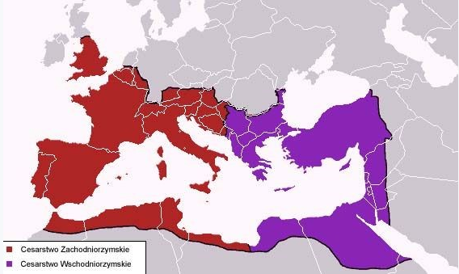

.
2 Rozdział Daniela (Królestwo)
„W dwunastym roku panowania Nebukadnesara miał Nebukadnesar sen, tak iż jego duch był zaniepokojony i sen go odszedł… (16) Na to Daniel poszedł i prosił króla, aby mu dał czas na wyłożenie królowi snu. (19) Wtedy Danielowi została objawiona w nocnym widzeniu tajemnica, za co Daniel wysławiał Boga niebios… (27) Daniel odpowiedział królowi tymi słowy: Tajemnicy, o którą pyta król, nie mogą wyjawić królowi ani magowie, ani wróżbici, ani czarownicy, ani astrolodzy. (28) Jest jednak Bóg na niebie, który objawia tajemnice i wyjawia królowi Nebukadnesarowi, co się stanie w przyszłych dniach. A twój sen i twoje widzenie, które ci przeszły przez głowę, są takie: (29) Tobie, o królu, przyszły na twoim łożu myśli o tym, co kiedyś się stanie, a ten, który objawia tajemnice, powiedział ci, co się stanie. (30) Nie dzięki mądrości, którą miałbym w większym stopniu niż wszyscy żyjący, jest mi objawiona ta tajemnica, lecz abym wyłożył królowi sen i abyś ty zrozumiał myśli swojego serca. (31) Ty, królu, miałeś widzenie: Oto olbrzymi posąg stał przed tobą; wielki był ów posąg, potężny jego blask, a straszny jego wygląd. (32) Głowa tego posągu była ze szczerego złota, jego pierś i jego ramiona ze srebra, jego brzuch i jego biodra z miedzi, (33) jego golenie z żelaza, jego nogi po części z żelaza, po części z gliny. (34) Patrzyłeś, a wtem bez udziału rąk oderwał się od góry kamień, uderzył ten posąg w nogi z żelaza i gliny, i skruszył je. (35) Wtedy rozsypało się w kawałki żelazo, glina, miedź, srebro i złoto, i było to wszystko jak plewa na klepisku w lecie; i rozniósł to wiatr, tak że nie było po nich śladu. Kamień zaś, który uderzył w posąg, stał się wielką górą i wypełnił całą ziemię. (36) Taki jest sen, a teraz go wyłożymy królowi: (37) Ty, o królu, jesteś królem królów, któremu Bóg niebios dał królestwo, moc i siłę, i chwałę, (38) w którego ręce na całej zamieszkanej ziemi dał ludzi, polne zwierzęta i ptactwo niebieskie, którego uczynił władcą tego wszystkiego, ty jesteś głową ze złota, (39) ale po tobie powstanie inne królestwo, słabsze niż twoje, a potem trzecie królestwo z miedzi, które opanuje całą ziemię. (40) Czwarte królestwo będzie mocne jak żelazo, bo żelazo wszystko kruszy i łamie; i jak żelazo, które kruszy, tak i ono wszystko skruszy i zdruzgocze. (41) A że widziałeś nogi i palce po części z gliny, a po części z żelaza, znaczy, że królestwo będzie rozdzielone, lecz będzie miało coś z trwałości żelaza, jak widziałeś żelazo zmieszane z ziemią gliniastą. (42) A to, że palce u nóg były po części z żelaza, a po części z gliny, znaczy, że królestwo będzie po części mocne, a po części kruche. (43) A że widziałeś żelazo zmieszane z gliniastą ziemią, znaczy: zmieszają się z sobą, lecz jeden nie będzie się trzymał drugiego, tak jak żelazo nie może się zmieszać z gliną. (44) Za dni tych królów Bóg niebios stworzy królestwo, które na wieki nie będzie zniszczone, a królestwo to nie przejdzie na inny lud; zniszczy i usunie wszystkie owe królestwa, lecz samo ostoi się na wieki, (45) jak to widziałeś, że od góry oderwał się kamień bez udziału rąk, rozbił żelazo i miedź, glinę, srebro, złoto. Wielki Bóg objawił królowi, co potem się stanie. Sen jest prawdziwy, a wykład jego pewny. (46) Wtedy król Nebukadnesar padł na swoją twarz i oddał cześć Danielowi; i rozkazał złożyć mu ofiary z pokarmów i kadzidlane. (47) Potem odezwał się król i rzekł do Daniela: Zaprawdę wasz Bóg jest Bogiem bogów i Panem królów. On objawia tajemnice; gdyż ty mogłeś odsłonić tę tajemnicę” (Daniela 2:1-49).
„W dwunastym roku panowania Nebukadnesara miał Nebukadnesar sen” (2:1).
Pierwszy rok Nabukadnesara (Jeremiasza 25:1, por. 46:2) rozpoczął się w 605 roku przed Chrystusem, kiedy zdobył Egipt i Judę, uprowadzając do Babilonu Daniela (Daniela 1:3-6).
Dziewiętnasty rok Nabukadnesera rozpoczął się w 587/586 roku przed Chrystusem, wówczas Bóg ukarał „ZŁE FIGI” (Jeremiasza 24:1-10) i nastąpiło zburzenie świątyni Jeruzalemskiej.
Zatem dwunasty rok panowania Nabukadnesara przypada na rok 593 przed Chrystusem.
„Ty, królu, miałeś widzenie: Oto olbrzymi posąg stał przed tobą; wielki był ów posąg, potężny jego blask, a straszny jego wygląd. (32) Głowa tego posągu była ze szczerego złota” (2:31-32).
Posąg symbolizuje cztery kolejne mocarstwa światowe, które miały odegrać największą rolę na świecie i wywrzeć największy wpływ na lud Boży począwszy od Izraela cielesnego, kończąc na Izraelu duchowym.
Niesamowite jest to, że również historycy świeccy zgodnie z Pismem Świętym wskazują na te same powstające po sobie potęgi światowe, właśnie w takiej samej kolejności, jak Pismo.
Głowa posągu wyobraża Babilon (609 - 539 rok przed Chrystusem), potęgę współczesną Danielowi.
„Ty, o królu, jesteś królem królów, któremu Bóg niebios dał królestwo, moc i siłę, i chwałę, (38) w którego ręce na całej zamieszkanej ziemi dał ludzi, polne zwierzęta i ptactwo niebieskie, którego uczynił władcą tego wszystkiego, ty jesteś głową ze złota” (2:37-38).
„Jego pierś i jego ramiona ze srebra… (39), ale po tobie powstanie inne królestwo, słabsze niż twoje” (2:32,39).
Kolejnym „słabszym” mocarstwem, które urosło w siłę, a które wyobrażały pierś i ramiona posągu była Medo-Persja (539 - 331 rok przed Chrystusem).
„Twoje królestwo będzie podzielone i oddane Medom i Persom” (Daniela 5:28, por. 8:20).
„Jego brzuch i jego biodra z miedzi… (39), a potem trzecie królestwo z miedzi, które opanuje całą ziemię” (2:32,39).
Brzuch i biodra posągu symbolizują królestwo Grecji (331 - 146 rok przed Chrystusem).
Wszyscy znamy z historii ogromne i błyskawiczne podboje Aleksandra Wielkiego.
„I widziałem, jak natarł na barana, a rozjuszywszy się nań, uderzył na barana, złamał oba jego rogi; a baran nie miał siły, by mu sprostać; i rzuciwszy go o ziemię, zdeptał go, a nie było nikogo, kto by wyrwał barana z mocy kozła. (20) Baran z dwoma rogami, którego widziałeś, oznacza królów Medii i Persji. (21) A kozioł, to król grecki” (Daniela 8:7, 20-21).
„Jego golenie z żelaza, jego nogi po części z żelaza, po części z gliny. (40) Czwarte królestwo będzie mocne jak żelazo, bo żelazo wszystko kruszy i łamie; i jak żelazo, które kruszy, tak i ono wszystko skruszy i zdruzgocze” (2:33,40).
Po Grecji nastały rządy pogańskiego Rzymu, czyli nóg z żelaza (146 - 476 roku po Chrystusie).
„Czwarte zwierzę oznacza czwarte królestwo na ziemi, które jest inne niż wszystkie królestwa; ono pochłonie całą ziemię, podepcze i zmiażdży ją” (Daniela 7:23).
„A że widziałeś nogi i palce po części z gliny, a po części z żelaza, znaczy, że królestwo będzie rozdzielone, lecz będzie miało coś z trwałości żelaza, jak widziałeś żelazo zmieszane z ziemią gliniastą” (2:49).
Kryzys, który nastąpił po śmierci Marka Aureliusza (180 rok), a skończył się z początkiem panowania Dioklecjana (284 rok) był obrazem zniszczenia, klęsk i śmierci. Wojny, toczący ze sobą pretendenci do tronu (było ich ponad 50), trwająca w tym okresie stuletnia wojna domowa, oszustwa, spiski, legiony walczące przeciwko sobie oraz zagrożenia z zewnątrz i związane z tym wszystkim nieszczęścia pozbawiły Rzym przeszło połowy ludności – ten obraz wskazuje
{kind=link}
na wspomniane w proroctwie „podziały w królestwie”.
Dodatkowo w 395 roku nastąpiło podzielenie Imperium Rzymskiego na:
- Zachodnie (Honoriusz),
- Wschodnie (Arkadiusz).
Przez co można było wówczas jeszcze wyraźniej dostrzec dwie nogi posągu.

„A to, że palce u nóg były po części z żelaza, a po części z gliny, znaczy, że królestwo będzie po części mocne, a po części kruche. (43) A że widziałeś żelazo zmieszane z gliniastą ziemią, znaczy: zmieszają się z sobą, lecz jeden nie będzie się trzymał drugiego, tak jak żelazo nie może się zmieszać z gliną” (2:42-43).
Jak widać, „czwarte królestwo” z wizji Daniela miało się ostać aż do końca, choć podzielone między sobą czasami bardziej, czasami mniej, to jednak „RZYM” w różnych formach trwa do dziś, jak też napisano:
„A to, że palce u nóg były po części z żelaza, a po części z gliny, znaczy, że królestwo będzie po części mocne, a po części kruche. (43) A że widziałeś żelazo zmieszane z gliniastą ziemią, znaczy: zmieszają się z sobą, lecz jeden nie będzie się trzymał drugiego, tak jak żelazo nie może się zmieszać z gliną” (Daniela 2:42-43).
Rzymianie podbili cały basen Morza Śródziemnego. Ich Imperium rozpadło się dopiero w V wieku za sprawą barbarzyńskich plemion (10 rogów, palców), które wdarły się i osiedliły w jego granicach, przejmując wiele elementów jego kultury.
Narody te wyobrażają palce posągu i to one dały początek współczesnym państwom Europy:
1. Anglosasi (Anglia).
2. Alemani (Niemcy, w 962 roku Otton I zostaje cesarzem, powstaje „Święte Cesarstwo Rzymskie Narodu Niemieckiego”).
3. Burgundowie (Szwajcaria),
4. Frankowie (Francja, w 800 roku Karol Wielki mianowany cesarzem, utworzono „Święte Imperium Rzymskie”, które uważano wówczas za odrodzone antyczne cesarstwo rzymskie – czyli obraz bestii z księgi Objawienia).
5. Longobardowie (Włochy).
6. Swewowie (Portugalia).
7. Wizygoci (Hiszpania).
Spośród państw podzielonej Europy (dziesięć rogów Daniela 7:24) miał wyłonić się Mały Róg (imperium rzymsko-katolickie, państwo kościelne Daniela 7:24) - intrygujący, odmienny i przewyższający je mocą. Za jego sprawą trzy z owych dziesięciu rogów (narodów) przestały istnieć. Były to Ariańskie narody (nie uznawały diabelskiego dogmatu trójcy).
8. Herulowie.
9. Wandalowie.
10. Ostrogoci.
Liczba 10 stanowiła literalną liczbę po upadku Rzymu, później stanowi już symboliczną liczbę - wyobrażającą państwa Europy. Taki stan rzeczy trwa dziś i ma dotrwać do samego końca. Można także zauważyć, że podobnie, jak na przestrzeni dziejów, tak i dzisiaj Francja oraz Niemcy (dwurożna bestia z ziemi z Objawienia 13) odgrywają największą rolę z pośród wymienionych państw.
Według wizji danych Danielowi, ostatnim mocarstwem władającym na ziemi miał być właśnie Rzym i tak też było i jest - bez względu na to, jakie formy przybierał w przeszłości i przybiera w teraźniejszości.
Krótko mówiąc, dawny pogański Rzym został przekształcony w cesarstwo rzymskokatolickie. Imperium zachodnio-rzymskie upadło w 476 roku, lecz ożyło na nowo za sprawą kościoła rzymskokatolickiego, które stopniowo podporządkowało sobie narody (rogi) wyrosłe na gruzach Imperium zachodnio-rzymskiego. Jako Imperium Rzym został pokonany, lecz jako cywilizacja zmierzał do odrodzenia. Dokonało się to dzięki kościołowi rzymskiemu, który rządził światem dłużej oraz bardziej despotycznie niż jakiekolwiek z poprzednich mocarstw.
Obecnie tym Imperium - wyrosłym na poprzednich i jeszcze większym od poprzednich, które cały czas rośnie jest Unia Europejska (ósmy król z Objawienia 17:11).
W 1957 roku, na wzgórzu Kapitol w Rzymie podpisano Traktaty rzymskie (1957 rok) – międzynarodowe ustawy stanowiące przełom dla idei integracji Europy i podwaliny funkcjonowania Unii Europejskiej.
Na oficjalnej stronie UE napisano, że gmach parlamentu UE jest „POLITYCZNYM I RELIGIJNYM CENTRUM STAROŻYTNEGO ŻYMU.”
Jean Manuel Barroso - przewodniczący organu wykonawczego Unii Europejskiej, czyli Komisji Europejskiej w jednym zdaniu ukazał nam, jakie aspiracje mają ludzie przewodniczący UE: „Czasem lubię porównywać organizację Unii Europejskiej do Imperium... IMPERIUM.”
„Czwarte zwierzę oznacza czwarte królestwo na ziemi, które jest inne niż wszystkie królestwa; ono pochłonie całą ziemię, podepcze i zmiażdży ją. (24) A dziesięć rogów znaczy, że z tego królestwa powstanie dziesięciu królów, a po nich powstanie inny (państwo kościelne - imperium rzymsko-katolickie); ten będzie inny niż poprzedni i obali trzech królów. (25) I będzie mówił zuchwałe słowa przeciwko Najwyższemu, będzie męczył Świętych Najwyższego, będzie zamyślał odmienić czasy i zakon; i będą wydani w jego moc aż do czasu i dwóch czasów i pół czasu. (26) Potem odbędzie się sąd i pozbawią go władzy, aby ją ostatecznie zniszczyć i obalić” (Daniela 7:23-26).
Sąd nad małym rogiem (Watykan, nierządnica katolicka z 17 rozdziału Objawienia) trwa nieprzerwanie od Rewolucji Francuskiej i obrazuje go wylewanie siedmiu ostatnich czasz gniewu Bożego (Objawienie 16), które zawarte są w ostatniej siódmej „trąbie”.
W roku 1798 (Rewolucja Francuska) poprzez antyklerykalną Francję została wylana pierwsza czasza gniewu Bożego, od tamtego czasu kościół rzymskokatolicki truchleje (pomimo chwilowych wzlotów).
Unia Europejska, jako „ósmy król” (lub poszczególne narody UE) niebawem zada kościołowi potężny cios (ostatni potężny sekularystyczny cios dla Watykanu – Objawienie 16:17-21), na który dziś czekamy, jako przepowiedzianą, ostatnią – siódmą „czaszę-plagę”, „a gdy doszczętnie będzie zniszczona, wtedy się to wszystko spełni” (Daniela 12:8).
ONA „zniszczona”, to właśnie nierządna „niewiasta” („wielkie miasto”) z 17 rozdziału Księgi Objawienia, czyli papiestwo - kościół rzymskokatolicki – Watykan.
„Wszystko się spełni”, gdyż ostatnia siódma „czasza” zamyka – dopełnia głos „ostatecznej – siódmej trąby” i bezpośrednio poprzedza powrót Pana, który wykona ostateczny wyrok na Imperium rzymsko-katolickim i jego przywódcy - „Synu bezprawia”, „którego Pan Jezus zabije tchnieniem ust swoich i zniweczy blaskiem przyjścia swego” (2 Tesaloniczan 2:6-9).
Wówczas Pan odda każdemu bez wyjątku należną zapłatę, „gdy się objawi Pan Jezus z nieba ze zwiastunami mocy swojej, (8) w ogniu płomienistym, wymierzając karę tym, którzy nie znają Boga, oraz tym, którzy nie są posłuszni ewangelii Pana naszego Jezusa” (2 Tesaloniczan 1:7-8).
W Księdze Objawienia możemy zaobserwować następujący schemat wydarzeń:
Zdjęcie siedmiu pieczęci stanowi wstęp do zagrzmienia siedmiu trąb.
Gdy ucichną pierwsze cztery trąby, odzywa się „pierwsze biada”, czyli „piąta trąba”, następnie „drugie biada”, czyli „szósta trąba” i na końcu ostatnie „trzecie biada”, czyli siódma trąba”, która zawiera właśnie „siedem ostatecznych czasz gniewu Bożego”.
Gdy ostatnia, czyli siódma czasza zostanie całkowicie wylana, to skończy grzmieć lub inaczej mówiąc – dopełni się głos siódmej trąby, która zawierała siedem czasz gniewu Bożego i wówczas powróci nasz umiłowany Pan, o tym właśnie czytamy w pozostałej części Pisma:
„W jednej chwili, w oka mgnieniu, na odgłos trąby ostatecznej; bo trąba zabrzmi i umarli wzbudzeni zostaną jako nie skażeni, a my zostaniemy przemienieni” (1 Koryntian 15:52, por. 1 Tesaloniczan 4:16-17, Objawienie 10:7, 11:15,17, Mateusza 24:31).
„Patrzyłeś, a wtem bez udziału rąk oderwał się od góry kamień, uderzył ten posąg w nogi z żelaza i gliny, i skruszył je. (35) Wtedy rozsypało się w kawałki żelazo, glina, miedź, srebro i złoto, i było to wszystko jak plewa na klepisku w lecie; i rozniósł to wiatr, tak że nie było po nich śladu. Kamień zaś, który uderzył w posąg, stał się wielką górą i wypełnił całą ziemię” (2:33-35).
„Za dni tych królów Bóg niebios stworzy królestwo, które na wieki nie będzie zniszczone, a królestwo to nie przejdzie na inny lud; zniszczy i usunie wszystkie owe królestwa, lecz samo ostoi się na wieki, (45) jak to widziałeś, że od góry oderwał się kamień bez udziału rąk, rozbił żelazo i miedź, glinę, srebro, złoto. Wielki Bóg objawił królowi, co potem się stanie. Sen jest prawdziwy, a wykład jego pewny” (2:44-45).
Czym lub Kim jest ów Kamień?
„Rzecze im Jezus: Czy nie czytaliście nigdy w Pismach: Kamień, który odrzucili budowniczowie, stał się kamieniem węgielnym; Pan to sprawił i to jest cudowne w oczach naszych? (43) Dlatego powiadam wam, że Królestwo Boże zostanie wam zabrane, a dane narodowi, który będzie wydawał jego owoce. (44) I kto by upadł na ten kamień, roztrzaska się, a na kogo by on upadł, zmiażdży go” (Mateusza 21:42-44).
„Potknęli się oni o kamień obrazy, (33) jak napisano: Oto kładę na Syjonie Kamień obrazy i skałę zgorszenia, a kto w niego uwierzy, nie będzie zawstydzony” (Rzymian 9:32-33).
Jehoszua, Syn Boga Jedynego - „On to jest owym kamieniem odrzuconym przez was, budujących, On stał się kamieniem węgielnym. (12) I nie ma w nikim innym zbawienia; albowiem nie ma żadnego innego imienia pod niebem, danego ludziom, przez które moglibyśmy być zbawieni” (Dzieje 4:11).
Dlaczego ów Kamień oderwał się bez udziału rąk (ludzkich) i kiedy?
„I rzekł jej anioł: Nie bój się, Mario, znalazłaś bowiem łaskę u Boga. (31) I oto poczniesz w łonie, i urodzisz syna, i nadasz mu imię Jezus. (32) Ten będzie wielki i będzie nazwany Synem Najwyższego. I da mu Pan Bóg tron jego ojca Dawida. (33) I będzie królował nad domem Jakuba na wieki, a jego królestwu nie będzie końca” (Łukasza 1:30-33).
Syn Boga został poczęty „w ciele” (Słowo, które było u Boga ciałem się stało) bez udziału mężczyzny – człowieka (rąk).
„A Maria rzekła do anioła: Jak się to stanie, skoro nie znam męża? (35) I odpowiadając anioł, rzekł jej: Duch Święty zstąpi na ciebie i moc Najwyższego zacieni cię. Dlatego też to, co się narodzi, będzie święte i będzie nazwane Synem Bożym” (Łukasza 1:34-35).
To właśnie wówczas „oderwał” się Kamień – Jehoszua od „góry”.
Od jakiej „góry” oderwał się kamień?
Góry w Piśmie oznaczają narody.
„Tyś przeniósł winorośl z Egiptu, Wygnałeś narody i ją zasadziłeś. (10) Przygotowałeś jej miejsce, Zapuściła korzenie i bujnie pokrywa ziemię. (11) Jej cieniem góry (narody) zostały okryte” (Psalm 80:9-11, por. Jeremiasza 3:6, 23).
„Góra Syjon” wyobrażała naród izraelski (Izajasza 51:16; 59:20, Izajasza 49:14-16).
Pan powiedział, „że Królestwo Boże zostanie wam zabrane, a dane narodowi (wiernym ludziom z każdego narodu, w tym Izraela), który będzie wydawał jego owoce. (44) I kto by upadł na ten kamień, roztrzaska się, a na kogo by on upadł, zmiażdży go” (Mateusza 21:42-44).
Jak czytamy u Daniela „Kamień zaś, który uderzył w posąg, stał się wielką górą i wypełnił całą ziemię”.
Zaskoczony oglądanymi scenami już prorok Izajasz o tym pisał:
„Czy ziemia może być zrodzona w jednym dniu, czy naród może się urodzić za jednym razem? A jednak Syjon, zaledwie poczuł bóle, od razu porodził swoje dzieci” (Izajasza 66:7-8 ).
Obecnie gromadzenie się na tej symbolicznej - duchowej Górze Syjon dotyczy wszystkich chrześcijan, którzy wierzą, przyznają się do Chrystusa i są posłuszni Synowi Bożemu, o których napisano:
„Lecz wy podeszliście do góry Syjon i do miasta Boga żywego, do Jeruzalem niebieskiego i do niezliczonej rzeszy aniołów, do uroczystego zgromadzenia (23) i zebrania pierworodnych, którzy są zapisani w niebie, i do Boga, sędziego wszystkich, i do duchów ludzi sprawiedliwych, którzy osiągnęli doskonałość, (24) i do pośrednika nowego przymierza, Jezusa” (Hebrajczyków 12:22-24).
Zgodnie z tym, co wcześniej przepowiedziano:
„Wszakże każdy, kto będzie wzywał imienia Pana, będzie wybawiony; gdyż na górze Syjon i w Jeruzalemie będzie wybawienie” (Joela 3:5).
„Mówi: To za mało, że jesteś mi sługą, aby podźwignąć plemiona Jakuba i przywrócić oszczędzonych synów Izraela, więc ustanowiłem cię światłością pogan, aby moje zbawienie sięgało aż do krańców ziemi” (Izajasza 49:6).
Teksty Izajasza 11:9 oraz 65:25, niewątpliwie nawiązuje do opisywanego w Izajasza 2:1-4 obrazu „góry ze świątynią (lud Boży napełniony duchem Bożym) Pana” do której zbiegają się obywatele wszystkich narodów by słuchać nauki Bożej.
„I stanie się w dniach ostatecznych, że góra ze świątynią Pana będzie stać mocno jako najwyższa z gór i będzie wyniesiona ponad pagórki, a tłumnie będą do niej zdążać wszystkie narody. (3)... gdyż z Syjonu wyjdzie zakon, a słowo Pana z Jeruzalemu” (Izajasza 2:2-3, por. 42:1-6).
Kamień oderwał się od literalnej góry (naród cielesnego Izraela), aby urosnąć i stać się obecnie ogromną „górą” (ludzie wiary ze wszystkich narodów – duchowy Izrael, Syjon, Jeruzalem) -„Królestwem”, w którym nie panuje już wypełniony Zakon Mojżeszowy (łącznie z 10 kamiennymi nakazami), lecz panuje ZAKON CHRYSTUSOWY (1 Koryntian 9:20-21, Jana 15:8-10, 14:21, Rzymian 3:20-27, 1 Jana 3:23, 2 Jana 1:9).
W co uderzył „kamień”?
W NOGI posągu!
A to kolejna wskazówka i wyraźny dowód na to, że Królestwo Boże, które powstało – musiało powstać za czasów panowania Imperium pogańskiego Rzymu, które symbolizowały NOGI POSĄGU z wizji Daniela.
Co jest efektem tych wydarzeń?
Panujące Królestwo Boże.
Tak jest – KRÓLESTWO BOŻE nieprzerwalnie panuje od blisko 2000 lat!!!
„Królestwo Boże nie przychodzi dostrzegalnie, ani nie będą mówić: Oto tutaj jest, albo: Tam; oto, bowiem Królestwo Boże jest pośród was” (Łukasza 7:21-21).
Prawie od 2000 lat synowie Królestwa Bożego działają na ziemi i są przyrównani do kwasu, który jest dodany do ciasta, aby się to Królestwo rozrastało. Właśnie o tym mówił Pan w przypowieści:
„I znów rzekł: Do czego przyrównam Królestwo Boże? (21) Podobne jest do kwasu, który niewiasta pewna wzięła, rozczyniła w trzech miarach mąki, aż wszystko się zakwasiło” (Łukasza 13:20).
Królestwo stale powiększa się o kolejne „żywe kamienie”.
„I wy sami jako kamienie żywe budujcie się w dom duchowy, w kapłaństwo święte, aby składać duchowe ofiary przyjemne Bogu przez Jezusa Chrystusa. (6) Dlatego to powiedziane jest w Piśmie: Oto kładę na Syjonie kamień węgielny, wybrany, kosztowny, A kto weń wierzy, nie zawiedzie się (7) Dla was, którzy wierzycie, jest on rzeczą cenną; dla niewierzących zaś kamień ten, którym wzgardzili budowniczowie, pozostał kamieniem węgielnym, (8) ale też kamieniem, o który się potkną, i skałą zgorszenia; ci, którzy nie wierzą Słowu (Synowi Bożemu – Jana 1:1, Objawienie 19:13), potykają się oń, na co zresztą są przeznaczeni” (1 Piotra 2:5-7).
To królestwo budują teraz na ziemi wierni słudzy Boga i Jego Syna, poprzez posłuszeństwo i głoszenie Ewangelii.
„Do czasów Jana był zakon i prorocy, od tego czasu jest zwiastowane Królestwo Boże i każdy się do niego gwałtem wdziera” (Łukasza 16:16).
Chrystus wyraźnie wskazał, z kim będzie działał i nadal działa w Swoim Królestwie: z tymi, którzy będą „uczyć przestrzegać wszystkiego, co wam przykazałem. A oto Ja jestem z wami po wszystkie dni aż do skończenia świata” (Mateusza 28:20).
„Kto ma przykazania moje i przestrzega ich, ten mnie miłuje; a kto mnie miłuje, tego też będzie miłował Ojciec i Ja miłować go będę, i objawię mu samego siebie” (Jana 14:21).
„Ja przekazuję wam Królestwo, jak i Mnie Ojciec mój przekazał” (Łukasza 22:29).
Bóg Ojciec i Jego Syn – zamieszkują w dzieciach Bożych mocą ducha Bożego (Chrystusowego, Świętego, Prawdy, Pocieszyciela), dlatego prawdziwa Świątynia Boża, to nowotestamentowy lud Boży - żywe kamienie, budujące się na „mieszkanie Boże w Duchu” (Efezjan 2:20-22).
Owo zgromadzenie budowane jest od czasów apostolskich:
„I wy sami jako kamienie żywe budujcie się w dom duchowy, w kapłaństwo święte, aby składać duchowe ofiary przyjemne Bogu przez Jezusa Chrystusa” (1 Piotra 2:5).
Budowa owej duchowej świątyni – zgromadzenia wiernych, rozpoczęła się od położenia kamienia węgielnego (1 Piotra 2:6), którym był Jehoszua. Następnie wedle wzoru owego narożnego kamienia ułożone zostały fundamenty:
„Zbudowani na fundamencie apostołów i proroków, którego kamieniem węgielnym jest sam Chrystus Jezus, na którym cała budowa mocno spojona rośnie w przybytek święty w Panu, na którym i wy się wespół budujecie na mieszkanie Boże w Duchu” (Efezjan 2:20-21).
„Albowiem fundamentu innego nikt nie może założyć oprócz tego, który jest założony, a którym jest Jezus Chrystus” (1 Koryntian 3:8-11).
Królestwo Boże ma dwa zasadnicze etapy:
- pierwszy etap jest niewidzialny – duchowy, który teraz trwa (nowonarodzenie - pierwsze zmartwychwstanie,
- drugi etap jest widzialny – fizyczne wydarzenia.
Kiedy fizycznie powróci Pan Jehoszua obudzi oraz przemieni wszystkie dzieci Boże z wszystkich wieków, zabierając je do „domu Ojca”, w którym „wiele jest mieszkań; gdyby było inaczej, byłbym wam powiedział. Idę przygotować wam miejsce. (3) A jeśli pójdę i przygotuję wam miejsce, przyjdę znowu i wezmę was do siebie, abyście, gdzie Ja jestem, i wy byli” (Jana 14:1-3).
„Głosimy tedy, jak napisano, Czego oko nie widziało i ucho nie słyszało, i co do serca ludzkiego nie wstąpiło, to przygotował Bóg tym, którzy go miłują.” (1 Koryntian 2:9).
Los wszystkich ziemskich królestw jest postanowiony i wszystko się dzieje zgodnie z Bożym planem, którego nikt nie odmieni.
„I świat przemija wraz z pożądliwością swoją; ale kto pełni wolę Bożą, trwa na wieki.” (1 Jana 2:17).
„Królestwo moje nie jest z tego świata; gdyby z tego świata było Królestwo moje, słudzy moi walczyliby, abym nie był wydany Żydom” (Jana 18:36).
Świat już jest martwy, dlatego „wyjdźmy z niego” i duchowo nie bądźmy jego częścią.
„Jezus rzekł mu: Pójdź za mną, a umarli niechaj grzebią umarłych swoich” (Mateusza 8:22).
„My wiemy, że z Boga jesteśmy, a cały świat tkwi w złem. (20) Wiemy też, że Syn Boży przyszedł i dał nam rozum” (1 Jana 5:19).
Wejście do tego Królestwa TREAZ (por.Mateusza 21:31) rozpoczyna się od się od WIARY W ŚWIADECTWO OJCA O SYNU:
„Bo wszystko, co się narodziło z Boga, zwycięża świat, a zwycięstwo, które zwyciężyło świat, to wiara nasza. (5) A któż może zwyciężyć świat, jeżeli nie ten, który wierzy, że Jezus jest Synem Bożym? (9) Jeżeli świadectwo ludzkie przyjmujemy, to tym bardziej świadectwo Boże, które jest wiarogodniejsze; a to jest świadectwo Boga, że złożył świadectwo o swoim Synu. (10) Kto wierzy w Syna Bożego, ma świadectwo w sobie. Kto nie wierzy w Boga, uczynił go kłamcą, gdyż nie uwierzył świadectwu, które Bóg złożył o Synu swoim. (11) A takie jest to świadectwo. że żywot wieczny dał nam Bóg, a żywot ten jest w Synu jego. (12) Kto ma Syna, ma żywot; kto nie ma Syna Bożego, nie ma żywota. (13) To napisałem wam, którzy wierzycie w imię Syna Bożego, abyście wiedzieli, że macie żywot wieczny” (1 Jana 5:5, 9-13).
Następnie od naszej osobistej relacji z Jehoszua Chrystusem, od szczerego, posłusznego, dziecinnego zaufania we wszystko, co powiedział i przykazał, prostego zaakceptowania i naśladowania Go, jako Bożego Syna i Zbawcy, Jedynego pośrednika, Pana i Króla (1 Koryntian 3:11), tak abyśmy wzrastali w poznaniu, nabierając wiary na wzór Jego wiary, abyśmy nawiązali takie relacje z miłosiernym Ojcem, jakie ma On - pozostawił na doskonały wzór myślenia, wierzenia i postępowania.
1. Wiara w świadectwo.
2. Posłuszeństwo Słowu.
1 + 2 = Życie wieczne.
Stajemy się dziećmi Królestwa, gdy uwierzymy i oddamy Chrystusowi samych siebie ze wszystkim, co nasze, nasz czas, całe nasze jestestwo, kiedy umieramy dla tego świata i rodzimy się ponownie.
Jeśli ktoś świadomie lekceważy Boga i Jego wolę, buduje swoje własne królestwo (na przykład organizacje religijne z ich własnymi „credo” wyznania – musisz to, musisz tamto, a jak nie to nie jesteś jednym z nas lub Bogu się nie podobasz) lub łudzi się drugą szansą w bardziej sprzyjających warunkach, czy baśniami o narodzie wybranym i jego przyszłej hegemonii nad światem lub innymi cielesnymi wizjami królestw na tej ziemi - będzie musiał zdać z tego sprawę w chwili powrotu Syna Bożego, prawowitego Króla, Pana i obecnego Władcy.
Bóg Ojciec dał człowiekowi wolną wolę i może wybierać pomiędzy życiem a śmiercią.Podstawą do odebrania nagrody jest właściwy fundament wiary.
„Niechaj się nie trwoży serce wasze; wierzcie w Boga i we mnie wierzcie! (6) Odpowiedział mu Jezus: Ja jestem droga i prawda, i żywot, nikt nie przychodzi do Ojca, tylko przeze mnie. (7) Gdybyście byli mnie poznali i Ojca mego byście znali; (15) Jeśli mnie miłujecie, przykazań moich przestrzegać będziecie. (21) Kto ma przykazania moje i przestrzega ich, ten mnie miłuje; a kto mnie miłuje, tego też będzie miłował Ojciec i Ja miłować go będę, i objawię mu samego siebie. (23) Jeśli kto mnie miłuje, słowa mojego przestrzegać będzie, i Ojciec mój umiłuje go, i do niego przyjdziemy, i u niego zamieszkamy. (24) Kto mnie nie miłuje, ten słów moich nie przestrzega, a przecież słowo, które słyszycie, nie jest moim słowem, lecz Ojca, który mnie posłał. (27) Pokój zostawiam wam, mój pokój daję wam; nie jak świat daje, Ja wam daję. Niech się nie trwoży serce wasze i niech się nie lęka” (Jana 14:1,6-7,15,21,23-24,27).
Dlatego czuwajmy, pełni wiary, miłości, pokoju i nadziei, „aby gdy przyjdzie, nie zastał was śpiącymi. (37) To, co wam mówię, mówię wszystkim: Czuwajcie!” (Marka 13:36).
.
kopia strony: https://jehoszua.ddv.pl/readarticle.php?article_id=87 Wszelkie prawa autorskie należą się autorowi tej strony
724aa896cc